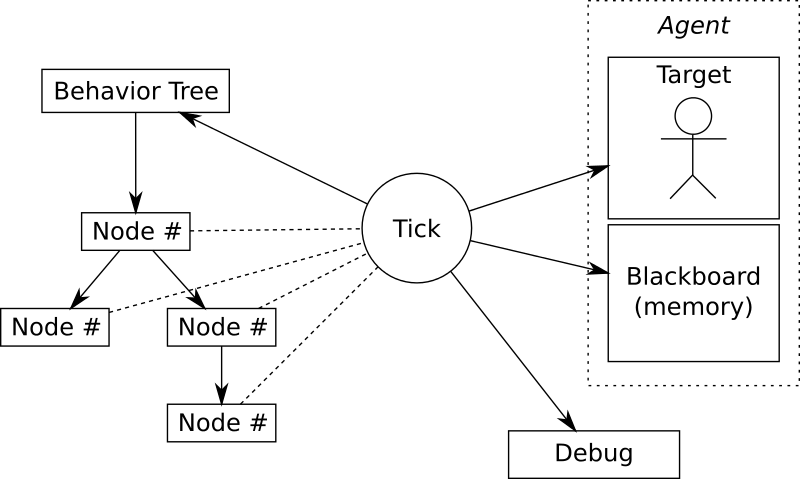

基于Erlang的行为树实现
什么是行为树
行为树，英文是Behavior Tree，简称BT，是由行为节点组成的树状结构。行为树的每个节点都会返回一个状态，成功，失败，运行，父节点根据子节点的返回值做出相应的决策。 在游戏开发中，行为树主要用来实现怪物AI的行为决策，根据条件以及环境来决定怪物执行什么样的行为，如攻击，逃跑，巡逻，休息等。
为什么使用行为树
怪物行为的控制一般来说有三种方法，
- 最简单的if-else嵌套。这种方法最直观，但是维护起来比较困难。
- 第二种方法是有限状态机。根据怪物当前所处的状态和当前的环境，决定状态如何迁移。当状态较多时，状态之间的迁移会比较复杂。而且增加状态时需要改动的地方很多。
- 行为树相对于前两种方式的优势在于，他实现了控制逻辑与行为逻辑的分离，控制逻辑就是行为树，行为逻辑则是各个行为节点。 对于游戏开发来说，我们可以让策划通过行为树编辑器来编辑行为树，程序只需要实现具体的行为节点，就可以实现行为决策。
组成部分
行为树的结构如图。

行为树有四种类型的节点，分别是
- 控制节点，最主要的是选择节点（Selector）和顺序节点（Sequence）。控制节点都不是叶子节点，它根据子节点的返回值返回成功，失败，运行这三种状态。
- 行为节点，具体的行为逻辑，如逃跑，巡逻。行为节点一般是叶子节点，返回成功，失败，运行这三种状态。
- 条件节点，叶子节点，返回成功，失败这两种状态。
- 装饰节点，非叶子节点，实现一些附加的逻辑。如取反。
黑板（blackboard）是行为树实现中用来存储变量，感知环境的一个概念，节点可以访问黑板来存取变量。
行为树一般以一定的频率周期性的执行tick函数，每次tick都从根节点开始执行。有一些行为树会直接从返回运行的节点开始执行，这样的话如果有低优先级的节点一直返回运行状态， 遇到高优先级的节点时则无法打断低优先级的节点。比如怪物在巡逻的时候返回运行，这时候如果有玩家攻击它，合理的反应是进行反击或者逃跑，但是如果每次tick都从巡逻节点开始执行， 则根本不会处理到反击或逃跑的逻辑。
要注意的一个问题是，当出现高优先级的行为B1打断低优先级行为B2时，因为每次从根节点开始tick，B2的无法从内部正常的关闭。这时候需要在主逻辑上额外处理一下上上次打开的节点， 即调用一下这些节点的close函数。Behavior3的实现中通过比较本次的开放节点列表和上次的开放节点列表，找出上次开放，本次没有开放的节点来关闭，这样可能存在一个问题。 也就是当上次开放的节点在本次tick正常结束的情况下，仍然会被重新关闭一次，即一个节点关闭了两次。解决的办法是，在判断节点是否需要关闭的时候，检测一下节点是否开放， 如果是开放，则关闭，否则不予处理。Erlang版本的实现中通过遍历行为树节点来找到未正常关闭的节点，考虑到行为树通常不会很大，性能上也可以接受。
具体实现
Erlang版行为树的具体实现参考了Behavior3的版本。每个节点的执行逻辑:
execute(#node{id = Id} = Node, #tick{blackboard = Blackboard} = Tick) ->
Tick1 = enter_cb(Node, Tick),
Tick2 = case get_key({is_open, Id}, Blackboard, false) of
false -> open_cb(Node, Tick1);
true -> Tick1
end,
{Status, Tick3} = tick_cb(Node, Tick2),
Tick4 = case Status of
running -> Tick3;
_ -> close_cb(Node, Tick3)
end,
Tick5 = exit_cb(Node, Tick4),
{Status, Tick5}.
选择节点
priority([], Tick) ->
{false, Tick};
priority([C|Children], Tick) ->
case execute(C, Tick) of
{true, NewTick} ->
{true, NewTick};
{running, NewTick} ->
{running, NewTick};
{false, NewTick} ->
priority(Children, NewTick)
end.
顺序节点
priority([], Tick) ->
{false, Tick};
priority([C|Children], Tick) ->
case execute(C, Tick) of
{true, NewTick} ->
{true, NewTick};
{running, NewTick} ->
{running, NewTick};
{false, NewTick} ->
priority(Children, NewTick)
end.
遍历行为树关闭未能正常关闭的节点
close_nodes(_, _, [], Tick) -> Tick;
close_nodes(undefined, _, _, Tick) -> Tick;
close_nodes(#node{children = [], child = undefined} = Node, CurOpenNodes, LastOpenNodes, Tick) ->
close_node(Node, CurOpenNodes, LastOpenNodes, Tick);
close_nodes(#node{children = Children, child = undefined} = Node, CurOpenNodes, LastOpenNodes, Tick) ->
NewTick = close_node(Node, CurOpenNodes, LastOpenNodes, Tick),
lists:foldl(
fun(Child, Acc) ->
close_nodes(Child, CurOpenNodes, LastOpenNodes, Acc)
end,
NewTick,
Children
);
close_nodes(#node{children = [], child = Child} = Node, CurOpenNodes, LastOpenNodes, Tick) ->
NewTick = close_node(Node, CurOpenNodes, LastOpenNodes, Tick),
close_nodes(Child, CurOpenNodes, LastOpenNodes, NewTick).
close_node(#node{id = Id} = Node, CurOpenNodes, LastOpenNodes, #tick{blackboard = Blackboard} = Tick) ->
case lists:member(Id, LastOpenNodes) andalso
not lists:member(Id, CurOpenNodes) andalso
get_key({is_open, Id}, Blackboard, false) of
true ->
%%?DEBUG("close_node ~p", [Node]),
close_cb_(Node, Tick#tick{blackboard = dict:store({is_open, Id}, false, Blackboard)});
false ->
Tick
end.